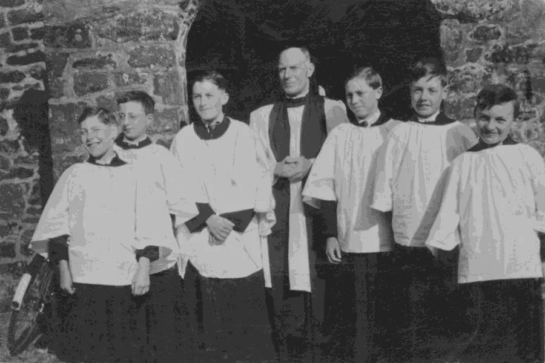
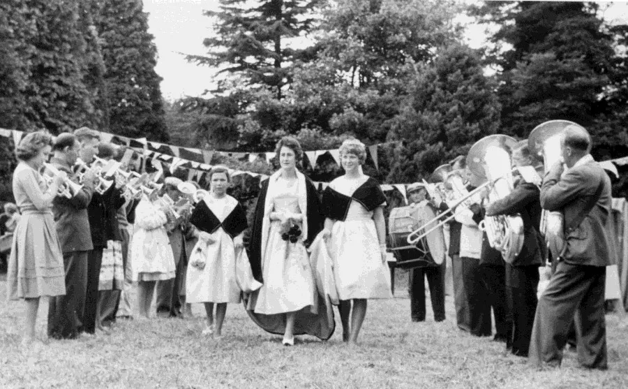
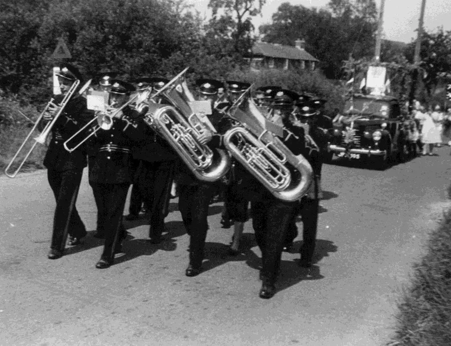
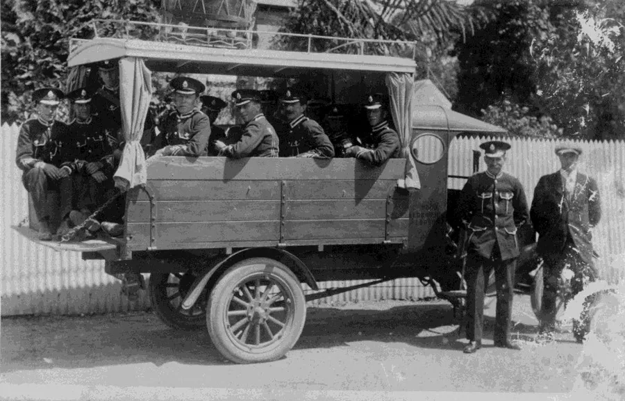
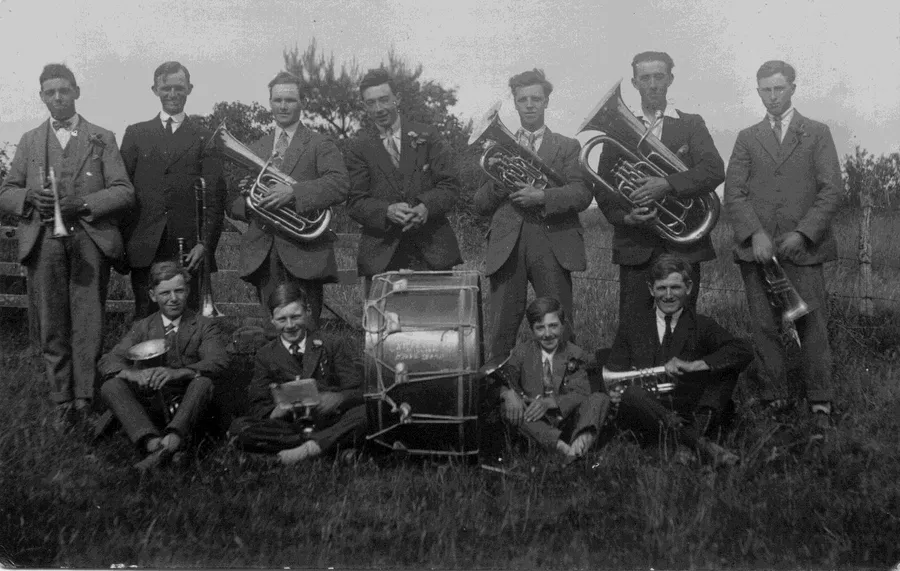
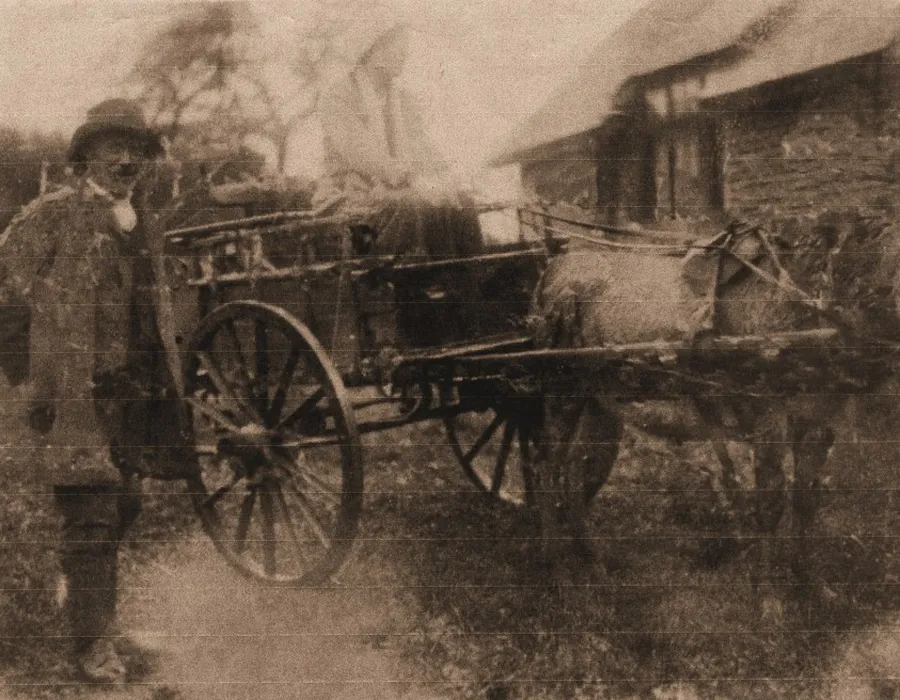
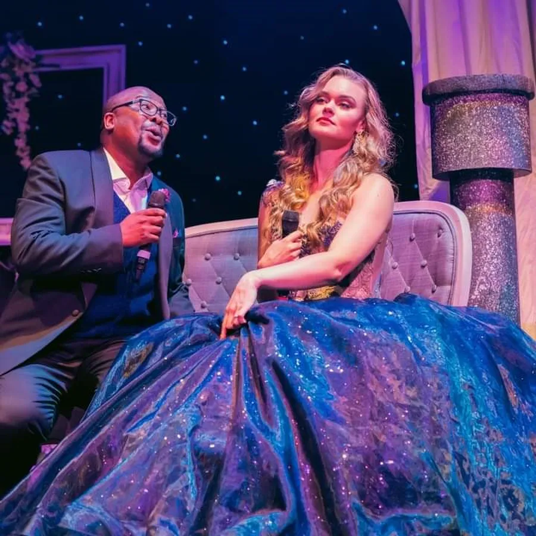
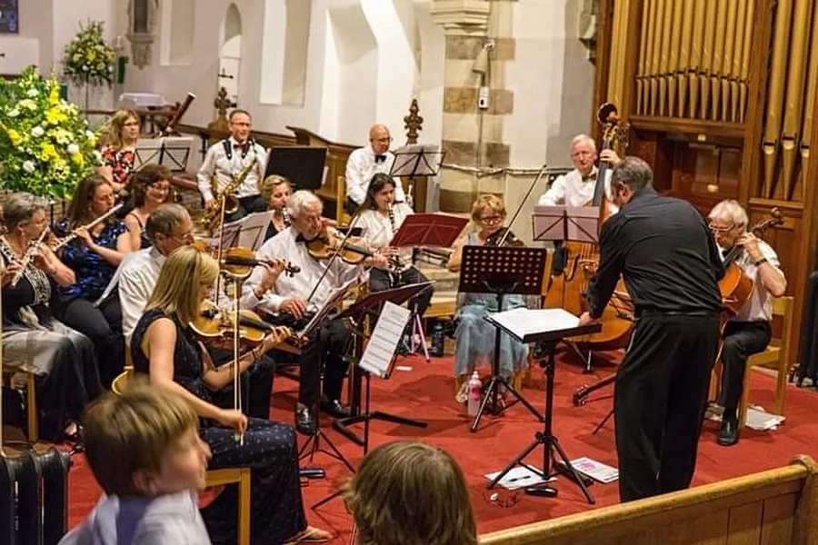
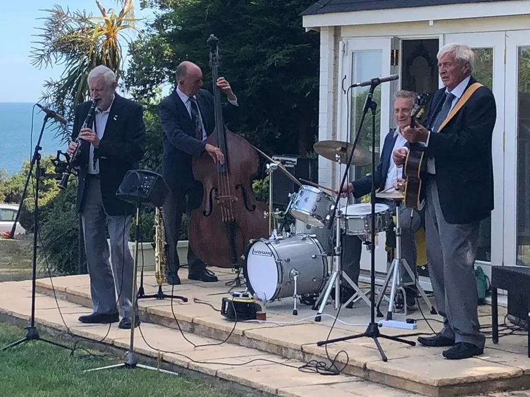

Live Music
by Adrian King

Live Music has always existed in the parish but it is not heard so often these days. Today we often have a solo voice but with accompaniment from a pre-recorded soundtrack. The churches had choirs and the hymns were played on organs but in recent years this has been replaced with more modern instruments.
But it must be said the Alderholt St. James originally had a four tune Barrel Organ until it was replaced with a pipe organ. Alderholt St. James have also had a choir for many years. Fred Gilbert was Church Choirmaster and also worked in the booking office at Fordingbridge Station for many years.

Godric Sims who had the blacksmiths at Charing Cross where Old Forge Close is now, was a clever musician. At Christmas when music was required for carols he would attach a small harmonium to the back of his Morris car. The instrument was removed from the car when music was required for singing.
An Alderholt Brass Band was active 1870–74 but probably folded before WWI. This band was re-formed in 1919 and disbanded again in 1962. It was known as Alderholt Silver Prize Band or just Alderholt Prize Band. Mr. Edwards who lived at the Dendells in Ringwood Road was a founder of the band and Albert Cheese was the last conductor when the band disbanded.

Don Hibberd said that the late Mr. Fred Gilbert “Played the Bass Trombone in the Alderholt Band.” He also said that four members of his mother’s family, the Pressley’s, were in the band. Donald played in the band from 1952 to its closure where he usually played the tenor trombone.
The band played functions in and around the parish. At the dedication of the War Memorial on 19th Sept 1920 the Alderholt Brass Band kindly gave their services and played before and during the services. Bandmaster Edward Pressley sounded the Last Post and Reveille.

The band usually marched dressed in full uniform on Remembrance Sunday with the procession assembled at the old village hall. It left at 10.30am arriving at the church about 10 minutes before 11.00am. It halted on the road and made a right turn to face the Memorial and just before 11.00am the Last Post would be played by a cornet player and the Standard lowered. Reveille was played after the two minute silence and the Standard raised again. In recent years the parade has started from the Old School.

They also played when there was a Village Fete in the field behind The Pines in Station Road. This field is now Apple Tree Road.
The Spar and Hurdle Band was the nickname given to the Cripplestyle Mission Brass Band because many of its members were hurdle-makers. For many years during the nineteenth century Cripplestyle had a band but there were periods when there was no band. On a previous occasion, the band was engaged to play at Queen Victoria’s Jubilee Celebrations in 1897.

L–R back Charlie Bailey, John Sims, Arthur Bailey (my grandfather), Percy Nicklen, George Colbourne, Alf Lockyer, and Unknown.
L–R front Wilfred Foster, Winston Thorne, Leslie Manston, and Frederick Sims.
On 9th Jan 1922 the Deacons of the church said that
"A brass band had been formed by our young men and permission to use the schoolroom for practices was granted when not needed for meetings."
The band led the Whit Thursday procession in 1927.
Mention must be made of Frank 'Champion' Fry who had been a world class cornet player. Champion, usually in his Donkey cart, would travel to Verwood once a week to play in the Verwood Silver Band. Champion being there gave the Verwood Band an eminence that lifted it beyond all imagination.

But nobody ever dreamed of playing a cornet as Champion played his cornet at the Sunday afternoon Service in the Chapel. Then indeed was he Champion and that was the name he was known by to all and sundry. Placing his cornet to his lips with Miss. Mary Williams at the organ he would lift the singing to great heights of wonder and praise.
But towards the end of his life he developed a heart condition. He could no longer march and play the cornet but insisted on playing the drum. Dennis Bailey says
"My dad told me that once they were on marching practice and marched whilst playing down the road towards Crendell. They realised as they marched up the hill to Corner Wood that the sound of the drum was getting weaker. They looked round and saw that Champion Fry, the Drummer, had got behind by some hundred yards but there he was still marching and beating the drum as hard as he could.”
Live Musicians with connections to the parish

Cape Town Opera

